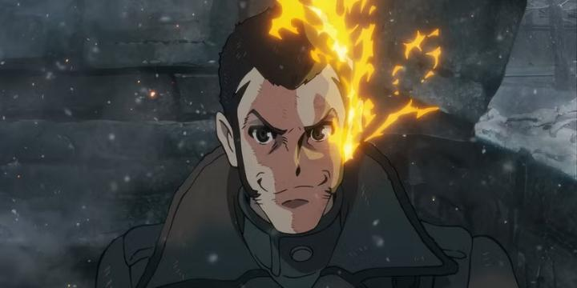
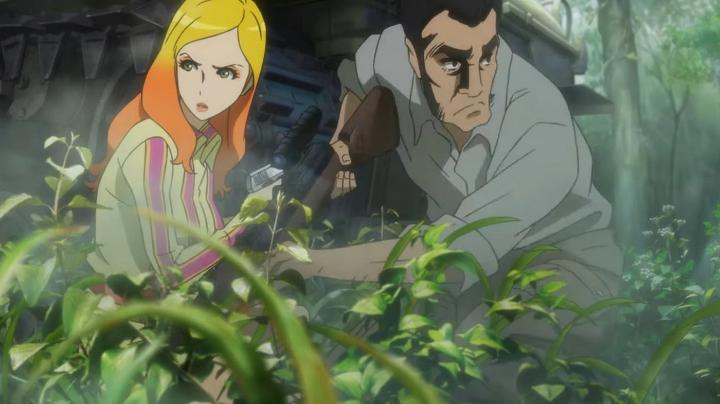

"Lupin the Third" is a long-running Japanese franchise with (counts) nearly 40 films and feature-length television specials. Takeshi Koike's take on the character, through a series of direct-to-video OVA starting in 2014, remains a standout to me due to its distinctly mature and sometimes gonzo tone. The third in that OVA trilogy released back in 2019, with an ambiguous ending hinting at a bigger conclusion to come. I had given up hope that such a conclusion would come to pass, but 6 years later (and more than a decade from the beginning), a feature film called "The Immortal Bloodline" released in theatres, promising to answer those lingering questions in an exciting climax. TMS Entertainment must have had high hopes for this one, reminding audiences that (if you don't count the TV specials) this was the first 2D-animated theatrical Lupin film in nearly 30 years.That theatrical push is probably why GKIDS landed the American rights to this movie, despite the home-video-only outlet Discotek having expertly released the previous OVA's, and virtually everything else Lupin. Graciously, the English cast returns to keep this consistent with the prior OVA releases. In perhaps a wise move given the long delay, "The Immortal Bloodline" starts with a 5-minute recap of the events from the prior 4 OVA releases. Yes, 4... a prequel OVA to "Bloodline" focusing on Zenigata released in Japan shortly before the film, rounding out a dedicated film collection for each character. Frustratingly, no news on this OVA for America exists yet, and from the in-film recap, it seemed like an important arc to the grander story. It's a bizarre choice to not have included this, perhaps as a double-feature to this film in theatres, and this nearly destroyed my experience watching the movie... if it doesn't get included with the eventual Bluray release of this movie, it'll be a gaping hole that renders the film meaningless. This is just one sore spot to the greater issues of "The Immortal Bloodline" and its plot. That recap is so fast and disjointed that even I, who had seen all the past OVA, was confused. It's part of a larger trend in anime franchise films where it's no longer preferred, but absolutely essential, that you've seen EVERYTHING on television or streaming that led up to the film, threatening to alienate what should be a growing audience. When it finally gets to the new story, the scenes leading the cast to get to the key location of the film is awkwardly edited. Koike was always a style-before-substance sort of director, but his stories usually made sense, perhaps in part because they were moderately simple. "The Immortal Bloodline's" story is convoluted, perhaps one of the most convoluted of the entire franchise ("Red VS Green" still takes the cake for me), and requires in-depth knowledge even outside Koike's Lupin bubble (minor spoiler: "Mamo" is involved in the story here). Even the English dub is surprisingly mundane, as if the cast and voice-director themselves had no clue what was going on in the movie. That's a lot about a movie that is basically "Lupin and company fly to a secret island to find the mastermind behind the hitmen sent to assassinate them." And maybe it's just me, but even the production quality left me feeling cold. It's not worse than the prior OVA's, but those were nearly a decade ago, and this was a new theatrical film, on what appeared to be a similar budget, and likely still in a 1080p production pipeline. Suddenly using jarring 3D models for large crowds of enemies doesn't help appearances either. Now being the fourth (or fifth) entry in this series, maybe the style has gotten a little stale? Koike's character designs are still the coolest the cast has ever looked, and in some ways, more faithful to Monkey Punch's original manga than the other anime entries. A bit of Koike's tastes in violence and fanservice are still present here, though perhaps slightly toned down (traditionally, OVA's had more leeway by avoiding an age rating, compared to theatrical film), but that still keeps the action interesting. And in the second half, when we get multiple all-out fights, we do get animation that's worthy against what came before. And the soundtrack still bangs.

Entering "The Immortal Bloodline" as if it was a proper film might have been a mistake. But consider it with the prior OVA entries as a whole... the other entries were essentially two episodes each, separated by repeating opening credits, each episode the length of a standard television broadcast. If I imagine all of it, including this film, as an 11-episode television series, a sequel season to "A Woman Called Fujiko Mine"... ah, I would be more satisfied thinking of it that way. Much like other television anime, or more comparably, something like "Hellsing Ultimate," it's normal for the weight of the story to drag things towards the all-important ending, with nonsensical exposition attempting to explain all the events that came before, and production quality standards to crack from an overworked staff desperate for the years-long project to finally end. That basically sums up everything, all the issues I have, with this movie. And from this more generous perspective, it's an OK ending to the grander plot as a whole, complete with returning enemies and questions answered.... well, mostly answered. The ending shots, including a mid-credits scene, are ambiguous, leaving a few new open questions, and plenty of room for yet another film or OVA. Let's call that "Season 3" of "A Woman Called Fujiko Mine." Whatever the case may be, "Lupin the Third - The Immortal Bloodline" is still chaotic fun and ridiculously cool, and probably worthwhile for fans of the Koike-verse version of the character. Maybe not as worthwhile for anyone who hasn't seen Koike's OVA's, but don't worry, you still have roughly 40 other films to choose from. - "Ani" More reviews can be found at : https://2danicritic.github.io/ Previous review: review_Lupin_the_Third_-_The_Hemingway_Papers Next review: review_Lupin_the_Third_-_The_Mystery_of_Mamo